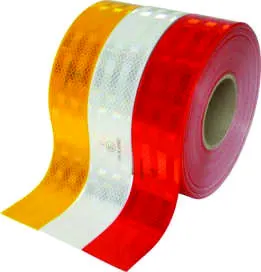

Fitas de Alta Visibilidade Luminosas
VC-150-RED Vermelho · VC-150-YEL Amarelo +1

3M · Sinalização
Códigos: 3M-T-983-72 Vermelho · 3M-T-983-71 Amarelo · 3M-T-983-10 Branco
Fitas de Alta Visibilidade Luminosas para Viaturas
VC-150-RED Vermelho · VC-150-YEL Amarelo +1
VC-150-7-RED Vermelho · VC-150-7-YEL Amarelo +1
R-CON450-ORG • Cones de segurança rodoviária fabricados em PVC · R-CON710-ORG (policloreto de vinilo) de elevada resistência +2
DH-TCB-1